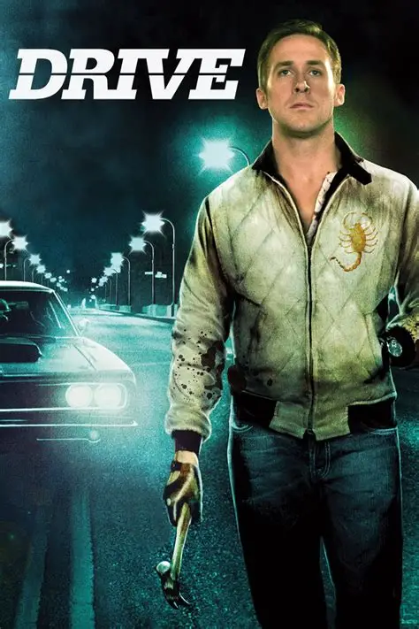

The Best Movies According To Mayur
My top 3 movies of all time.
spirited away
Ex machina
drive


my fav anime
IMDB: 8.6/10
During her family's move to the suburbs, a sullen 10-year-old girl wanders into a world ruled by gods, witches and spirits, and where humans are changed into beasts. Reviewers say 'Spirited Away' is acclaimed for its imaginative world, stunning animation, and evocative music.
really cool sci-fi movie
IMDB: 7.7/10
Caleb, a 26 year old programmer at the world's largest internet company, wins a competition to spend a week at a private mountain retreat belonging to Nathan, the reclusive CEO of the company. But when Caleb arrives at the remote location he finds that he will have to participate in a strange and fascinating experiment in which he must interact with the world's first true artificial intelligence, housed in the body of a beautiful robot girl.
super beautiful film .really artistic
IMDB: 7.8/10
Drive is a 2011 American action drama film directed by Nicolas Winding Refn. The screenplay, written by Hossein Amini, is based on James Sallis 's 2005 novel. The film stars Ryan Gosling as an unnamed Hollywood stunt driver who moonlights as a getaway driver.